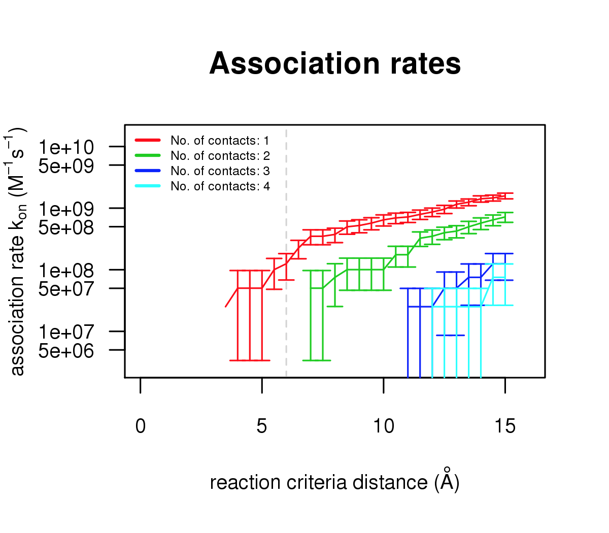

Calculation of bimolecular association rates with webSDA¶
Overview¶
This use case describes how you can predict protein-protein the diffusional association rate constant by using the web server version of the SDA (Simulation of Diffusion Association) package.
WebSDA (https://websda.h-its.org/webSDA) enables a user to run Brownian dynamics (BD) simulations of diffusional association for two solute molecules in a continuum aqueous solvent.
As the webserver does not support all features of the standalone version of SDA, e.g. it cannot handle cofactors and ions in structure files, the results should be assessed with care and the example in this use-case is to be viewed as educational. It is advised to run production runs with the standalone version of SDA ( available at https://mcm.h-its.org/sda). Besides calculating bimolecular association rate constants for known bound complexes, SDA can also be used to predict structures of protein-protein encounter complexes and to calculate bimolecular electron transfer rate constants, or to simulate diffusional motion of systems consisting of many macromolecules in continuum solvent (also in the presence of a surface).
For this use case, we will use an example of diffusional association of \(Gα_{olf}\) to apo-AC5. Details of these calculations can be found in the Live paper Bruce et al. 2019 and in Bruce et al. https://doi.org/10.1371/journal.pcbi.1007382
Background¶
Why should we care about the association rate of protein-protein interactions?
The rate at which the association occurs is important for the understanding of cellular function at the molecular level
Why do we perform Brownian dynamics simulations of protein-protein association?
For many interactions, the speed of association is limited by the rate of bimolecular diffusional association. We can simulate the diffusion of solutes to compute association rates, but also to perform protein-protein docking or to predict the structure of bound complexes
How are proteins modeled in Brownina dynamics simulations?
As the interaction of large biomolecules in solution is a highly complex problem with many degrees of freedom, the diffusional motion of proteins in Brownian dynamics simulations is often modelled by assuming the proteins to be rigid bodies. Furthermore, their interactions with surrounding water molecules are modeled implicitly (using random forces that mimic the collisions between solutes and water molecules). These assumptions not only speed up the calculation of the systematic forces by allowing the use of precomputed interaction grids, but also allow for larger simulation time steps, as faster vibrational motions are removed. At each simulation step, the position r of solute i within a system of N solutes is propagated using the Ermak-McCammon equation:
\[$$ \Delta r_{i} = \Delta t\sum_{j=1}^{N} ( \frac{\partial \widehat{D}_{ij}}{\partial r_{j}} + \frac{\widehat{D}_{ij}}{k_{B}T} \cdot F_{i} ) + R_{i} $$\]where \(k_B\) and T are the Boltzmann constant and simulation temperature, respectively, and \(F_i\) is the force acting on solute i due to its interactions with all other solutes; \(\widehat{D}\) is the diffusion tensor for the current configuration of the system, and \(R_i\) is a random displacement vector obtained from the factorisation of \(\widehat{D}\). The dependence of the diffusion of one solute on the diffusion of all other solutes is due to hydrodynamic interactions, where solutes are able to feel the flow fields in solution created by the other solutes.
Modelling hydrodynamic interactions is extremely computationally expensive, due to the need to factorise the diffusion tensor at every time step. In dilute conditions, as we use rigid solutes, we can assume these interactions are negligible, simplifying the equation and removing the need for matrix factorisation:
\[$$ \Delta r_{i} = \frac{\Delta t}{k_{B}T} D_{i}^{T} \cdot F_{i} + R_{i} $$\]where \(D_i^T\) is the infinite dilution translational diffusion coefficient of solute i, and \(R_i\) is a random vector sampled from a Gaussian distribution with mean zero and a variance of
\[$\left \langle R_{i}^{2} \right \rangle = 6D_{i}^{T} \Delta t$.\]A similar equation is used to propagate the rotational motion of the solutes based on the torques acting on them.
The predominant forces, \(F_i\), acting between proteins are due to long-range electrostatic interactions. These can be modelled by the interaction between a molecular electrostatic potential field grid derived by solving the Poisson-Boltzmann equation for one protein, and a set of “effective charges” on another protein. The repulsive interactions that prevent proteins from overlapping with each other can be modelled by a simple volume exclusion term that is also computed on a grid surrounding each protein.
- Electrostatic interaction and and effective charges for macromolecules (ECM) in a solvent
We need to calculate the electrostatic forces and interaction free energies between two macromolecules in order to study their diffusional association. Unfortunately realistic systems typically consist of thousands of atomic charges in an environment with a non-uniform dielectric permittivity and a solvent of non-zero ionic strength thus making solution of the Poisson-Boltzmann equation during the BD simulations computationally infeasible. This problem can be overcome by assigning and fitting effective charges at 1 or 2 atoms of the side-chains of the titratable residues to reproduce the electrostatic potential of a protein computed with the use of all atomic charges in a heterogeneous dielectric, in a homogeneous dielectric. Forces are then computed between effective charges of one protein and the precomputed electrostatic potential grid of another protein during the BD simulations.
Setting up data and runnung simulations using webSDA¶
Coordinate files for 2 reactant proteins and their complex, are required for the calculations. Here, we use coordinates extracted from one snapshot of a molecular dynamics (MD) trajectory. Usually coordinates are in PDB format and need to be converted to PQR format (with the addition of charges (Q) and radii (R). Here we will use PQR files directly.
- Input files
Due to the limitation of webSDA that does not handle coordinate files containing cofactors or ions, we will use modified input PQR files for this use case.
Specifically, as a workaround to this limitation of webSDA and to maintain the net charge of each protein, we replaced the Mg++ ion in the AC5 coordinate file by 2 Lysine residues with their atoms at the same coordinate as the original Mg++ ion. For \(Gα_{olf}\), we replaced GTP and Mg++ by three residues, Glu-Glu-Gly, with atoms positioned at the the positions of the cofactor and ion atoms. This procedure approximately conserves the charge distributions of the two molecules. The final PQR files can be downloade here:
for AC5: https://projects.h-its.org/sda/example/AC5/AC5_reorder_mg2lys2.pqr
for \(Gα_{olf}\) : https://projects.h-its.org/sda/example/AC5/Golf_mggtp2EEG.pqr
To run simulations on webSDA, you have to download these modified PQR input files for AC5 and \(Gα_{olf}\) and save them on your site.
Original PQR files can be downloaded from the live paper: Live paper Bruce et al. 2019: https://humanbrainproject.github.io/hbp-bsp-live-papers/2019/bruce_et_al_2019/bruce_et_al_2019.html. These PQR files can be used to generate the results presented in the paper with the standalone version of SDA.
- Running simulations on WebSDA
Upload the saved PQR files at the webserver. You can also do this outside this notebook by using the URL of webSDA directly: https://websda.h-its.org You need to select the “New Project”->”Association” analysis. Switch the input type to PQR, and give your solute a name. Do this for both solutes. Select again “Association” and give your analysis a name. On the left column, select AC5 and on the right column, select Golf. Then select “Next step”. This generates a reaction criteria file. After completion, again select “Next step” to calculate the electrostatic grid files for the solutes. After completion, again select “Next step” to start the SDA simulation. You can also open the tab for “Advanced options” and increase the number of runs to perform from the default of 200 to, for example 2000. More runs will result in more accurate results and more than 10000 runs are usually needed for obtaining sufficient statistical accuracy.
Results¶
- Computed association rates of AC5 and \(Gα_{olf}\)
The figures below shows the association rate constants computed for the complex of apo-AC5 and \(Gα_{olf}\) using 2000 runs for reaction criteria of 1-4 native polar contacts at distances from 3.5 to 15 Angstroms. For the results in the Live paper Bruce et al. 2019 and in Bruce et al. https://doi.org/10.1371/journal.pcbi.1007382 , a reaction criterion of 2 contacts at a distance of 6 Angstroms was used. This criterion is typically used for computing diffusional association rates for protein-protein complexation. For the protein structures simulated in this example and the limited number of trajectories generated, this criterion (2 contacts at 6 Angstroms) is not satisfied. However, the 6 Angstroms contact distance criterion is satisfied for one contact with 2000.This figure illustrates binding rate calculations using 2000 runs.